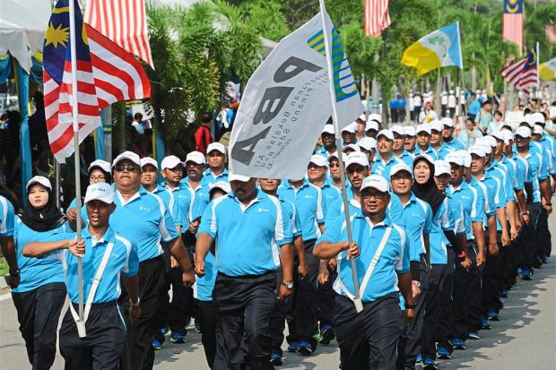
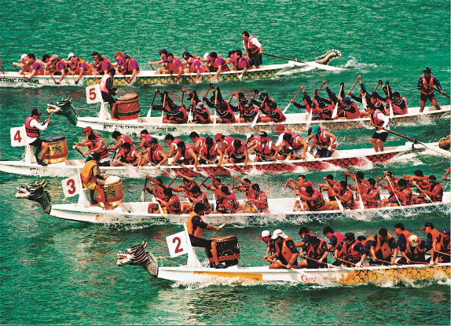
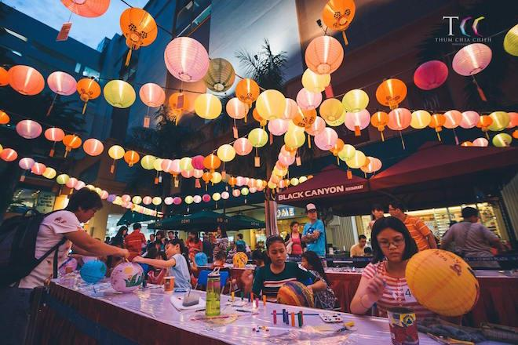
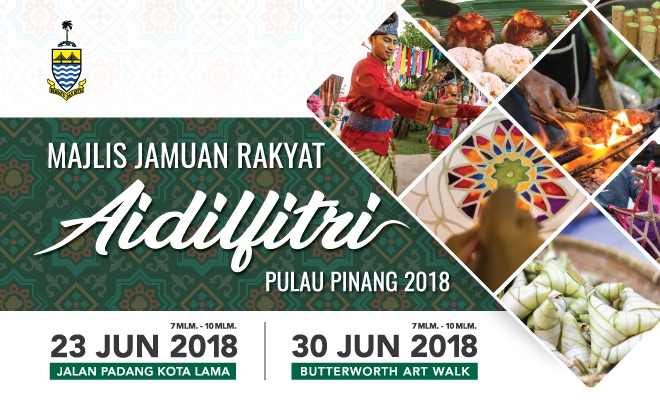
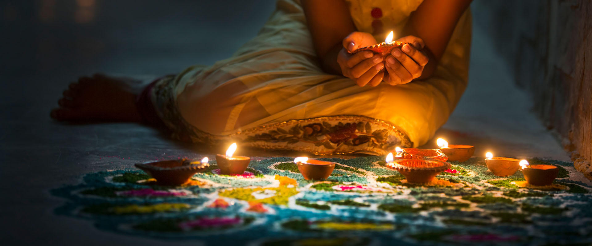
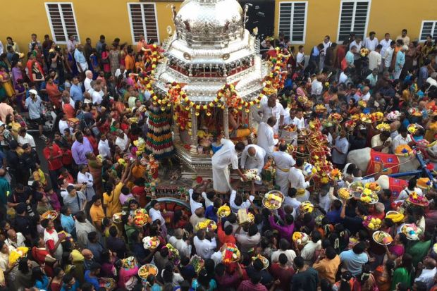
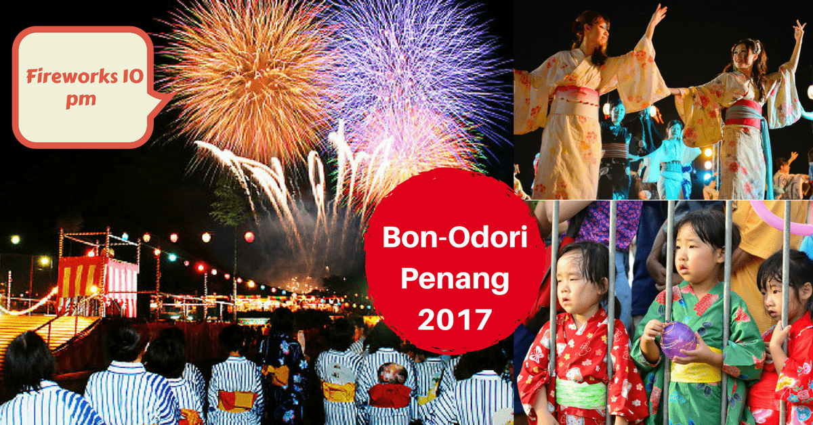
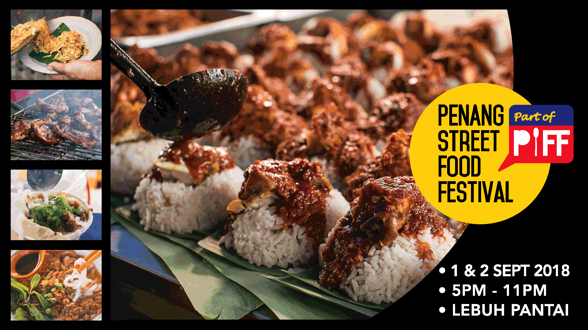

International, National and even local events. Penang has a myriad of different events, each unique in their own way. Due to being a cultural hub filled with different races living in harmony, people living in Penang celebrate each others' festivals as well as any events the state of Penang has in store for the locals and the tourists. People of different races and cultures can take the chance to join in the festivities, experiencing something different in Penang, may it be admiring the beautiful oil lamp lights during Deepavali or enjoying the awe-inspiring decorations put up all over Penang, or even just enjoying the Penang Street Food Festival (For more info, CLICK HERE. Penang can satisfy all your festive needs!
Events

Malaysian Events
Penang Merdeka Parade
Malaysia will be celebrating it's 62nd Independence day on the 31st of August 2019, and the state Penang is not missing out on this huge festivity. The annual Merdeka Day Parade is organised by the Penang State Government with more than 150 contingents representing various government agencies such as the State Secretary, JKR, MBPP, MPSP, District Office, PDRM, Bomba, Angkatan Tentera Malaysia, ambulance, RELA, Scouts and many more will be taking part in the parade.
Asia Pacific Masters Games

Ever think sports event are for professionals only? The Asia Pacific Masters Games may sound professional but it is actualy more of a sports competitions for people of various ages just to have fun. Participants get to choose the the event they want to participate in, whether it is competitive, recreational or social. The minimum age criterion ranges between 25 and 35 years depending on the sport. Participants compete for themselves, instead of their countries. There are no competition qualification requirements apart from the age requirement and membership in that sport's governing body
Chinese Events
Penang International Dragon Boat Festival
The Dragon Boat Festival, is a traditional holiday originating in China, occurring near the summer solstice. Having a Chinese community, this event is celebrated annually by the citizens of Penang. Held together with the Pesta Pulau Pinang, the event is an old tradition to honour the "spirit of the dragon" and the spirit of unity as the participants work together ato row the dragon boats to victory. Enjoy a weekend of steady and strong beats of chinese drums, the unity between participants as they row and various stage performances as the dragon boat teams fight it out on the lake to see who is crowned the champions for this annual event.
Nine Emperor Gods Festival

The Nine Emperor Gods Festival (Kew Ong Yeah) is celebrated on the 1st till the 9th day of the ninth month in the lunar calendar. During the celebration, the spirits of the Nine gods come down from the heavens to possess spirit mediums to put them in a trance. Many types of dangerous activities are carried out during the festival that could be an interesting watch, such as skewring and fire walking ceremonies. Across nine days, the devout practice a vegitarianism as part of the celebrations. On the last day, the Gods are sent off through a procession leading to the sea on an "Emperor Boat" accompanied by many other colorful floats.
Mid-Autumn Lantern Festival
The Lantern Festival or Mid-Autumn Festival is a harvest festival celebrated notably by the Chinese and Vietnamese people. The festival is held on the 15th day of the 8th month of the lunar calendar with full moon at night and is celebrated widely by the Chinese community in Penang and is a time when family and friends get together to admire the majesty of the full moon and eat Moon Cakes, drink Chinese Tea and walk around with beautiful chinese lanters as per tradition. Penangites and visitors can enjoy the festival at various locations such as Butterworth, Bukit Mertajam, Nibong Tebal and Kepala Batas.
Malay Events
Hari Raya Aidilfitri
Eid al-Fitr, or better known as Hari Raya Aidilfitri in Malaysia is a Muslim holiday celebrated by Muslims around the world to mark the end of the Ramadan fast. Hence, the celebration starts only after the month long fast during Ramadan. Special dishes like ketupat, rendang, lemang and other Malay delicacies such as various 'kuih-muih', which means dessert snacks, are served during this day. It is common to greet people with "Salam Aidilfitri" or "Selamat Hari Raya" which means "Happy Eid". Muslims also greet one another with "maaf zahir dan batin", which means "Forgive my physical and emotional (wrongdoings)".
Indian Events
Deepavali
Deepavali or "The Festival of Lights" is a colourful festival and is celebrated by the ethnic Hindus in Penang. During the celebration all manners of building are illuminated, including and not limited to, temples, homes, shops and office buildings. The preparations, and rituals, for the festival typically last five days, with the climax occurring on the third day coinciding with the darkest night of the Hindu lunisolar month Kartika. Oil lamps are lit and decorated in their homes as a method of thanking the gods for all the good times and good luck they had across the year. Many cultural performances and activities will take place. Delicious Indian food will be served during the celebration.
Thaipusam
Thaipusam is a festival celebrated by the Tamil community on the full moon in the Tamil month of Thai, whichis around January and February. The word Thaipusam is a combination of the name of the month, Thai, and the name of a star, Pusam. This particular star is at its highest point during the festival. Thaipusam actually celebrates the triumphant of good overb evil. Durung the celebration, a pilgrimage bringing the statue of Lord Muruga from Little India to the Arulmigu Balathandayuthapani Hilltop Temple at Waterfall Road. On the actual day of the celebrations, devouts go through the physical torture of being pierced as an act of reparation.
International Events
Bon Odori
The Bon Odori celebrated in Penang, meaning simply Bon Dance, is a traditional and merry Japanese festival that is celebrated with dances and lively drum performances to welcome the homecoming of ancestral spirits. This festival is a Japanese Buddhist observance that honours the spirit of ancestors, who return once a year to visit their families. The carnival-like atmosphere at Esplanade is made even merrier with stalls selling a variety of local and Japanese food, fireworks display, Japanese souvenirs, lively performances and games.
Penang Street Food Festival
Penang Street Food Festival 2018 is the largest street food festival in Penang with over 100 food vendors participating from both Penang island, and "Perai", which is the local term for the mainlain of Penang. Highlighted stalls include the decadent black sugar pao and world-famous laksa from Balik Pulau; the mainland favourites Nasi Kandar Pokok Ketapang and rojak; and available exclusively on Penang island, the gooey deliciousness that is sagor char from cecil market, and the tropical tasting Dangai Warisan Ibunda.